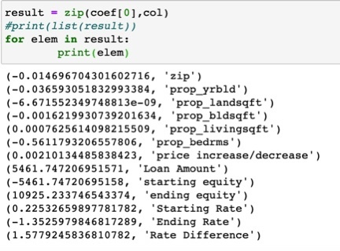

Observations
By utilizing machine learning models based on current tax data provided by the state, we are able to determine with a reasonable degree of accuracy which homes in a given area are likely or unlikely to sell.

The model.score function gives us a numerical value for how precise our model is. A model score of .99, or 99 percent, means our model is very precise. Woohoo!
Weight coefficients tell us what elements of our model are predictive and what aren't. Negative numbers indicate elements that are not very accurate at predicting outcomes, where positive numbers indicate a great deal of accuracy when predicting.

The scatter plot here shows our X's as a percentage of interest rate. The Y's show the duration of days the subjects have been in the house. There is a positive correlation with our testing.
Created by Caleb Sherry, Brian Smith, Max Eiteljorg, and Pat Petrus. Created May 2021.
All data displayed is publicly available through the state of Indiana.